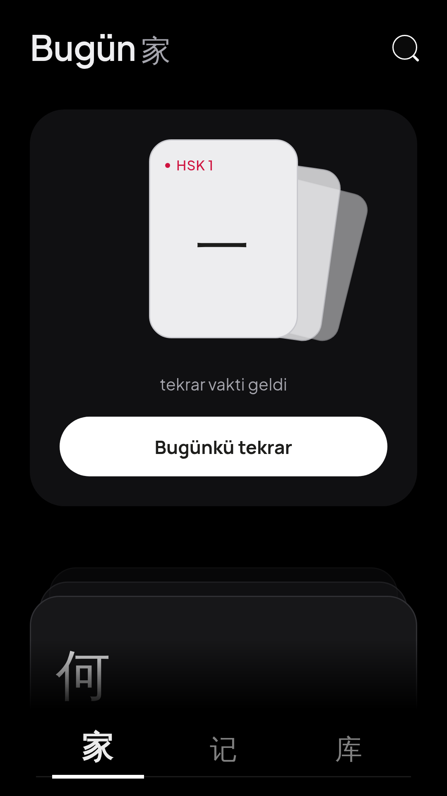
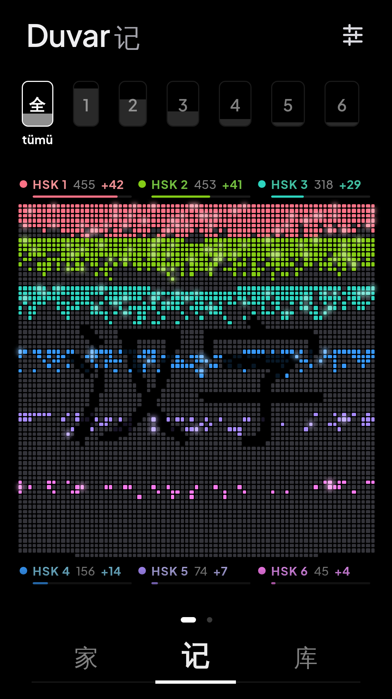
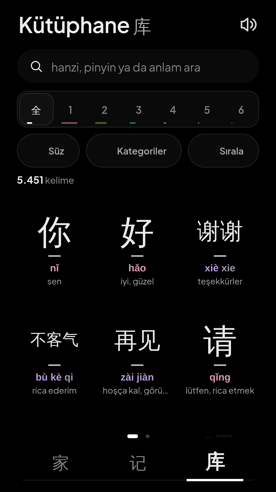
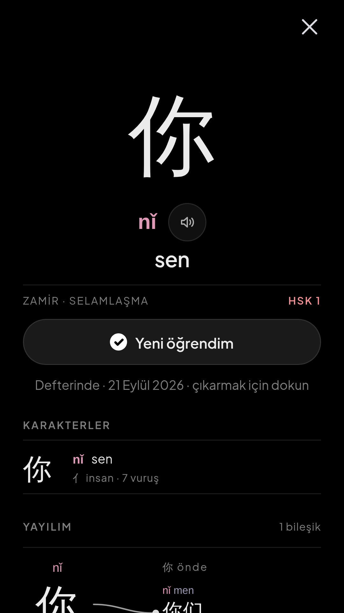
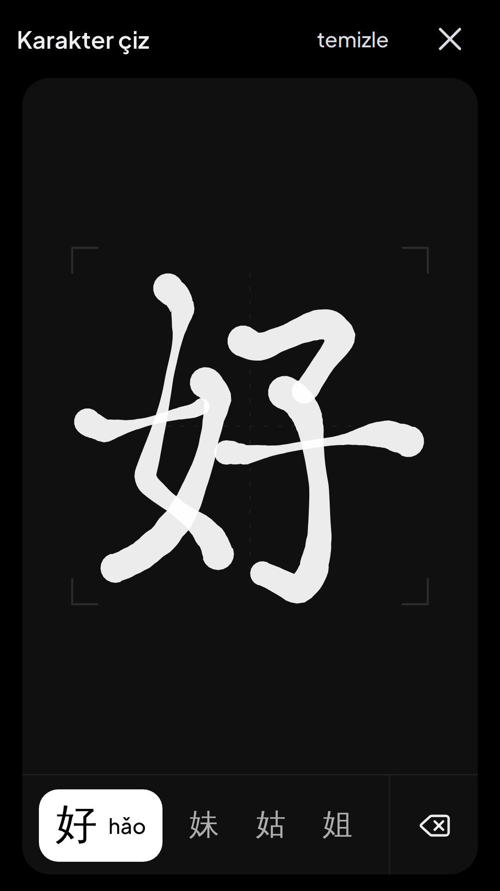

Lian 字迹
A Chinese character notebook. We don't teach you — we guide you along a hard road.





What it does
- HSK 1–6 characters and words, following the official HSK 2025 list
- Stroke-order (笔顺) animation and handwriting practice with a brush feel
- Pronunciation, example sentences and recognition cards
- Grammar patterns linked to each other: every page shows a next step
- The Wall, a map of everything you have learned; progress stays on your device, with optional Google backup
What it is not
No points, XP, streaks, hearts or leaderboards. No red-and-green grading, no "wrong". Curiosity carries the motivation, not rewards. The real work happens in your own notebook; Lian is the guide beside it.
Our goals
- Make learning Chinese easier, not longer. Answer the question every learner has: what should I study next, and how does it connect to what I already know?
- Never exploit learners. No mechanic that slows learning down to make money: no artificial waits, no locks, no "upgrade or you'll forget".
- Be the app you install right after Pleco. We don't compete with the dictionary; we do what it doesn't — when, in what order, and why.
- Become a classic. A trusted name on the road to Chinese, built on decisions that will still be right in ten years.